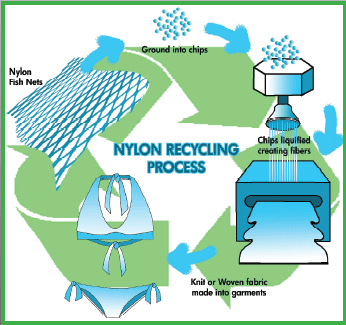
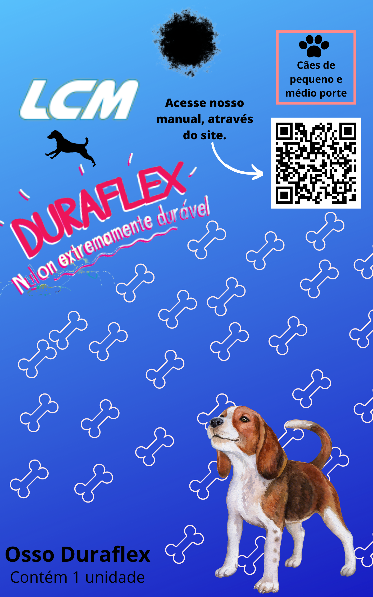
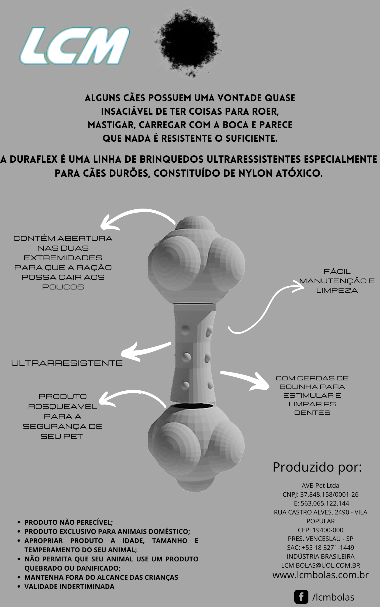

A linha duraflex trabalha com o nylon atóxico, esse matéria é resistente e não causa prejuízos a saúde dentaria do animal. A melhoria do produto já existente na linha de que a partir disso modificaríamos seu design com estimulantes para os dentes e limpeza e também trabalharíamos a ansiedade com técnicas para o cão brincar e gastar energia por mais tempo com um design de osso.
O brinquedo em formato de ossinhos e com a função de poder adicionar a ração ou petiscos para os animais tem a intenção de atrai-los a brincar com ele, e no momento em que estiverem brincando, as bolinhas do meio irão auxiliar a limpeza dos dentes.
O produto consiste no formato de um osso em que tenha furos nas extremidades que auxiliam na alimentação do animal enquanto ele brinca com ele, aliviando, dessa forma, o estresse causado pela ausência de atividades não realizadas pelo dono e na ausência dela.
Diminuir a ansiedade animal
Promover sáude
Distração/qualidade de tempo
Interação solo e conjunto com o dono
Conseguir LUCRO em até 3 anos
Aceitação de mercado
Desafios durante a produção (entregar materia prima no prazo)
Que as premissas sejam alcançadas
Atingir a meta de VENDA e PRODUÇÃO
Feito de Nylon Atoxico
É um material que a LCM ja ultiliza em suas produções.
Um material de alta durabilidade e resistencia.
Facil limpeza e não agride a saúde do animal.
Nylon é reciclável e não afeta a corrente de reciclagem. O nylon reciclado pode ser aplicado em diversos produtos, como por exemplo, na fabricação de carpetes, patins, airbags, relógios, uniformes de esqui, calçados esportivos, cordas, barracas e muitos outros.
O material da embalagemm é feito de um material reciclável, assim tendo um descarte mais seguro que não prejudica a saúde do meio ambiente.
Ao que o produto foi inspirado pela própria linha da fabrica, com a embalagem não seria diferente, então proporcionamos um estilo diferente porem não deixa de lembrar a embalagem original.
 